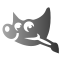

- Así se siente mi Barrio - Museé Franz Meyer - Dans le cadre de l'exposition du Prix National du Design - Oct 2019
- Banco de Memorias - “Tactiques de survie urbaine à l'ère des machines intelligentes” - Laboratorio de Tecnologías El Rule,CDMX, Mexico - Novembre 2018
- Así se siente mi barrio - Dans le cadre des résidences Me Sobra Barrio - Bibliothèque du Mexique, CDMX, México - Novembre 2018
- Morelos, Un Estado en la Mirada de los Fotógrafos - Museo Cuauhnáhuac (Palacio de Cortés), Cuernavaca, Morelos - Mars 2016 - Lien
CURRICULUM VITAE
Collectifs
- Museo Nacional - Cours d'été Animer une image - Juillet 2019
- Universidad La Salle Cuernavaca - Introduction à l'animation - Aout 2016 - janvier 2017
- Universidad La Salle Cuernavaca - Modélisation numérique- Février- Juillet 2016
- Escuela Digital - Photoshop pour l'architecture - Decembre 2016 - Mars 2017
- Escuela Digital - Montage vidéo et audio numérique - Décembre 2016 - Mars 2017
- Universidad Anglo Mexicana Europea - Illustration (En Ligne) - Avril 2014 - Juillet 2014
- Universidad Anglo Mexicana Europea - Dibujo Digital Vectorial (En Ligne) - Avril 2014 - Juillet 2014
- Universidad Anglo Mexicana Europea - Montage numérique (Online) - Août 2015 - Janvier 2016
- Cours privés d'animation et de programmation pour enfants - Janvier - Septembre 2015
- 2019 - Premio Nacional de diseño - Mention honorifique - Así se Siente mi Barrio - Octobre 2019.
- 2011 - Comisión Patronal de la República Mexicana (COPARMEX) - 100 meilleurs étudiants du District fédéral - 14/ novembre /2011.
- 2010 - Universidad La Salle Bajío " Festival national du court-métrage universitaire "- catégorie expérimentale- Un minuto más - 10/ Juin /2010
Anglais - Bilingue
-IELTS
- Listening 7.0
- Reading 7.5
- Writing 6.0
- Speaking 7.0
-Toefl ITP 150
Francais - Compétence professionnelle de base
- Course B2- IFAL
- Langue maternelle
1 Master, 1 Bachelor, 1 Spécialité, 4 Diplômés et 8 Cours Certifiés
- Degrés
- Master Design, Information et Communication - Spécialisation Systèmes d'Interaction - Universidad Autonoma Metropolitana - Cuajimalpa Unit - Sep 2017 - Mar 2019
- Spécialité dans Autodesk Maya 2011 - Classe virtuelle - février 2012 - juillet 2012 - 40 heures
- Baccalauréat en sciences de la communication - Université La Salle - 2008-2012
- Diplômés
- Diplôme en formation entrepreneuriale - Trepcamp Juin 2020 - août 2020
- Diplôme en Leader de la transformation numérique - Massachusetts Institute of Technology - Mai - Juine 2020
- Diplôme en nouvelles technologies - Université autonome du Mexique (UNAM) - 28 novembre 2016 - 30 décembre 2016 - 150 heures
- Diplôme en nouvelles masculinités, résolution non violente des conflits et des droits humains - Université autonome de Tlaxcala - sept - nov 2014 - 96 heures
- Diplôme en Cinéma 4D et Post-Production en After Effects - Mactraninee - Septembre 2012 - Décembre 2012 - 60 heures
- Diplôme en animation 3D et effets visuels - Aula Virtual - janvier 2011 - juillet 2011 - 120 heures
- Cours en présentiel
- Cours de multimédia, graphisme numérique et art électronique - Centre multimédia - Centro Nacional de las Artes - 18 au 22 juin 2018 - 20 heures
- Cours L’Image as Interface - Centro de la Imagen - 18 au 21 septembre 2018 - 16 heures
- Développement de projets de réalité virtuelle dans Unreal Engine avec HTC Vive - Centro de Cultura Digital - 20 août 2018 - 24 août 2018 - 20 heures
- Video Mapping - Cocolab - juin 2016 - septembre 2016 - 30 heures
- Programme de formation sur la communication spécialisée en prévention sociale de la violence et du crime avec un accent communautaire - Université Anahuac - décembre 2014 - 20 heures
- Cours sur l'Internet des objets avec Arduino - Thinking Dojo - mai 2013 - août 2013
- Cours interactif de scénographie - Centro Nacional de las Artes - mars 2013 - mai 2013
- Online Courses
- The Complete 2020 Web Development Bootcamp - Dr. Angela Yu - Udemy - 53 heures
- Connexion avec Arduino et Touchdesigner - Alex Gluschenko - janvier 2020 -2,5 heures
- Cours sur les applications de réalité augmentée avec Google ARCore - Udemy - 3,5 heures - août 2019
- Cours d'électronique - Udemy - 5 heures - mai 2019
- Vision par ordinateur avec OpenCV et Deep Learning Course - Udemy - 14 heures - mars 2019
- Interactivité avec OpenFrameworks - Udemy - 3 heures - janvier 2019
Langages de programmation
Python
C#
Javascript
PHP
C++
Java
Open GL
Software
Processing
Tensorflow
TD
Unity 3D
Open Frameworks
Unreal Engine
P5
Arduino
Resolume
After Effects
illustrator
Photoshop
Audition
Premiere
XD
Final Cut

GIMP
Inkscape
Audacity
Kdenlive
Blender
Cinema4D
Maya
Fusion 360
Zbrush
- Congrès mexicain de l'intelligence artificielle - Identification des signes d'anorexie et de dépression chez les utilisateurs des réseaux sociaux grâce au traitement du langage naturel. 2018, Merida.
- 2e Congrès international d'architecture et de design - "Así se siente mi barrio" Une proposition de design basée sur une recherche inclusive - 2019, Universidad Autónoma de Baja California
- Magazine de recherche en technologie de l'information - Tourismexico: Audiotours pour promouvoir un tourisme sûr à Mexico - Volume 7, numéro 14 (décembre / 2019)
- Digital Vasari - Site Web
- Centro de la Imagen - Me sobra Barrio : Résidences artistiques Community Link - 23 Avril 2018 - 30 Novembre 2018
- Takeda - Outsourcing Designer interactif
Février 2019 - avril 2019
Développement d'une application de réalité augmentée avec Vuforia pour les appareils Android. L'application a permis de créer des expériences immersives avec des signets imprimés, d'enregistrer des vidéos et de les envoyer en ligne.
- Art et biodiversité - Directeur artistique
Décembre 2015 - septembre 2016
Développement de contenus muséaux et modélisation 3D pour l'impression et la coulée de bronze pour la préservation des espèces menacées.
- Gouvernement de l'État de Puebla - Chef du Département de la communication pour la prévention de la violence.
Septembre 2013 - août 2015
Conception de programmes de communication et de contenu visuel pour la prévention sociale de la violence et de la criminalité dans l'État de Puebla, afin de promouvoir l'équilibre et l'éthique professionnelle dans les médias.
- Siete Media - Outsourcing en vidéo projection et de l'animation
Mai 2013 - juin 2013
Création de contenu multimédia avec modélisation et animation 3D et Motion Graphics et vidéo projection (vidéo mapping) sur une surface cylindrique à 270 degrés.
- Quala - Outsourcing direction artistique et de l'animation
Mars 2013 - mai 2013
Développement d'un salon multimédia pour lancer le produit Vive 100 à Mexico et Guadalajara.
- La Gusana Ciega, La Lupita and Enjambre (Rock Bands) - Direction artistique et VJ
Janvier 2013 - mai 2013
Création de contenu multimédia et mixage de visuels live (VJing) pour des concerts à travers le pays.
- Dibel Media - Directeur Art et Médias Audiovisuels
Juillet 2012 - novembre 2012
Direction artistique et développement de projets dans le domaine technologique. Développer des projets avec du matériel audiovisuel pour des marques, des événements d'entreprise et des concerts
- XDesign - Jr. Animator
Mars 2011 - mai 2011
Développement de la vidéo institutionnelle pour Alsea. La vidéo a été réalisée pour être incluse dans le rapport annuel 2011 de l'entreprise. Réalisation de la vidéo en animation graphique, de la conceptualisation à la livraison finale du produit.